Gallery¶
Every chart below is produced by examples/gallery.py; this page is generated from it.
All examples use this setup:
import viz_calc as vc
from viz_calc import datasets
import pandas as pd
trial = datasets.trial()
survey = datasets.survey()
sales = datasets.sales()
meas = datasets.measurements()
proj = datasets.projects()
edges = datasets.network()
survey["work_mode"] = survey["remote"].map({True: "Remote", False: "On-site"})
likert_items = ["Workload is manageable", "My manager supports me", "Tools are adequate",
"I see a future here", "Meetings are useful"]
levels = ["Strongly disagree", "Disagree", "Neutral", "Agree", "Strongly agree"]
monthly = (sales.assign(month=sales["date"].dt.to_period("M").astype(str))
.groupby("month", as_index=False)[["online", "store"]].sum())
Comparing groups¶
estimation_plot¶

benchmark_bar¶

lollipop¶
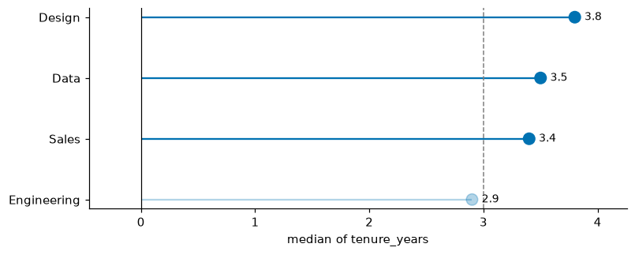
dumbbell¶
res = vc.dumbbell(monthly.tail(8), label="month", start="store", end="online",
sort=False, show_values=True)
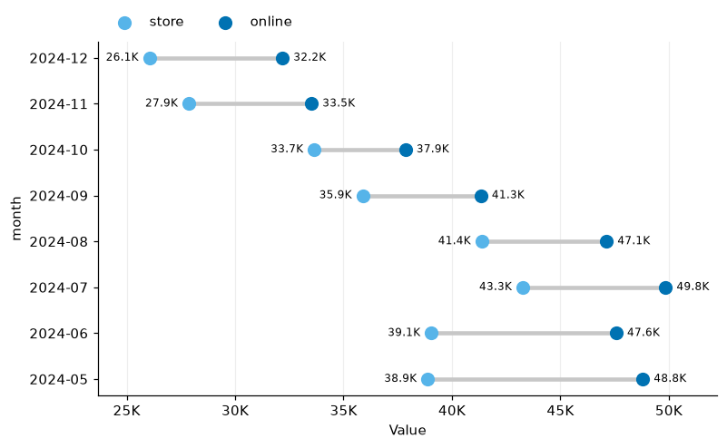
divergent_bar¶
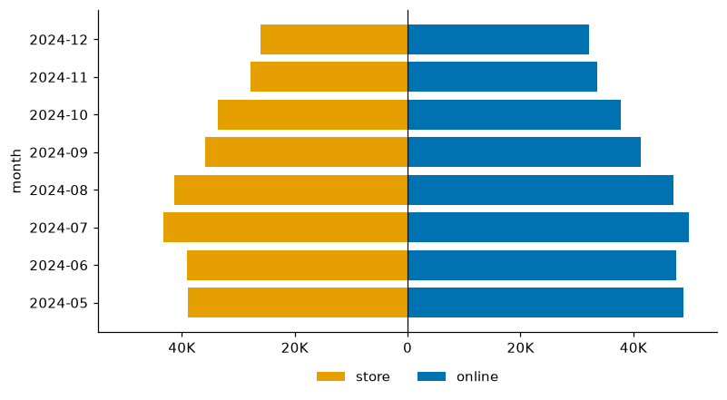
centered_bar¶
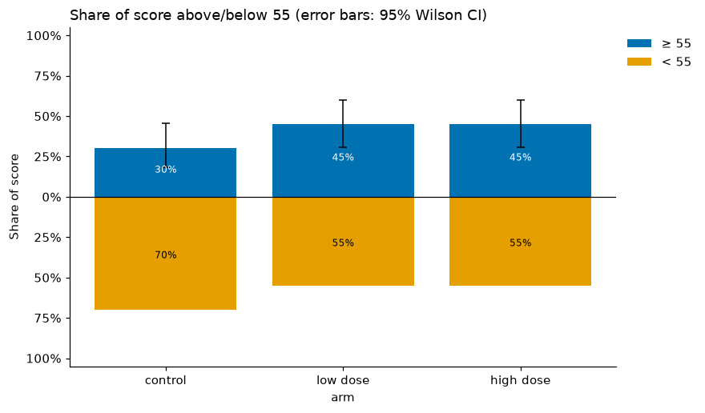
likert¶
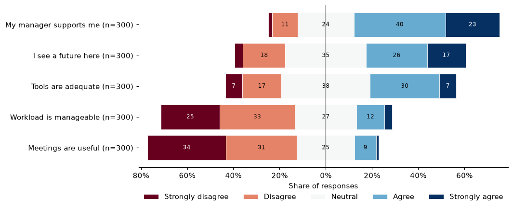
Correlation¶
correlogram¶
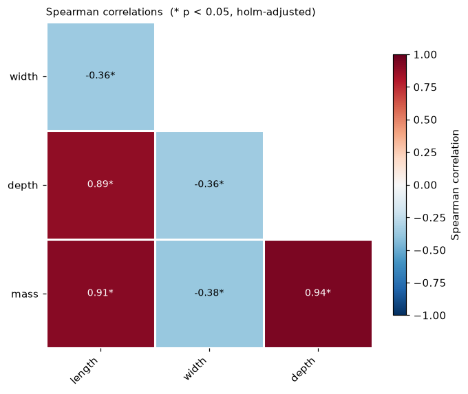
compare_correlations¶
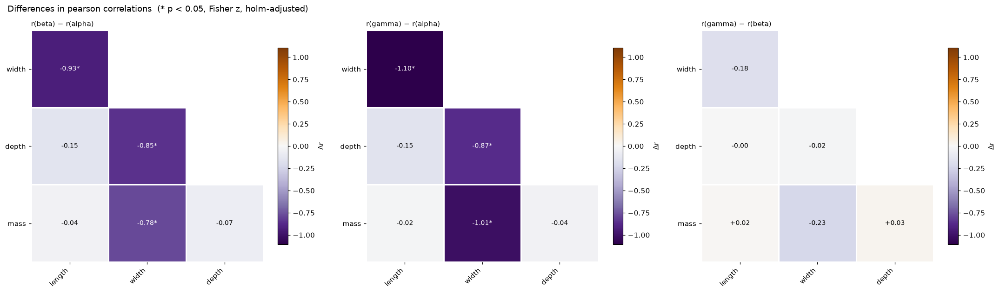
quadrant_plot¶
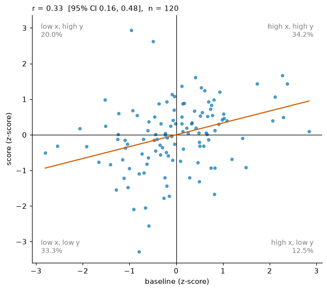
Distributions¶
histogram¶
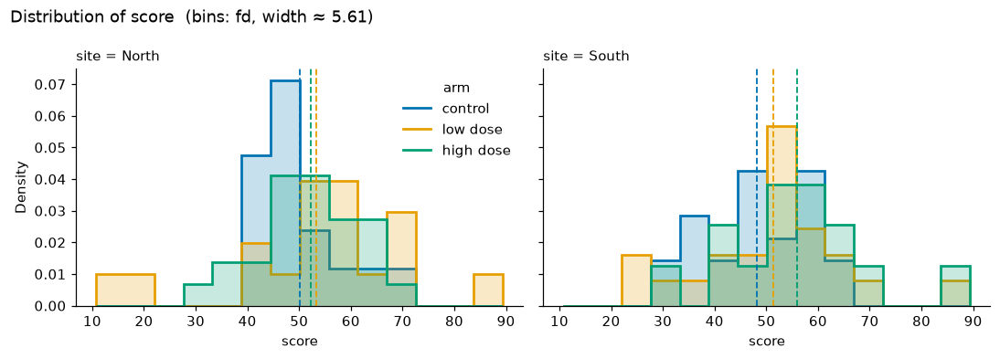
ridgeplot¶
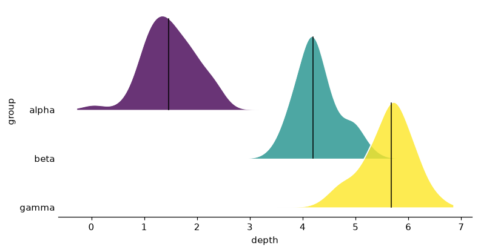
raincloud¶

Part-to-whole, flows and sets¶
waffle¶
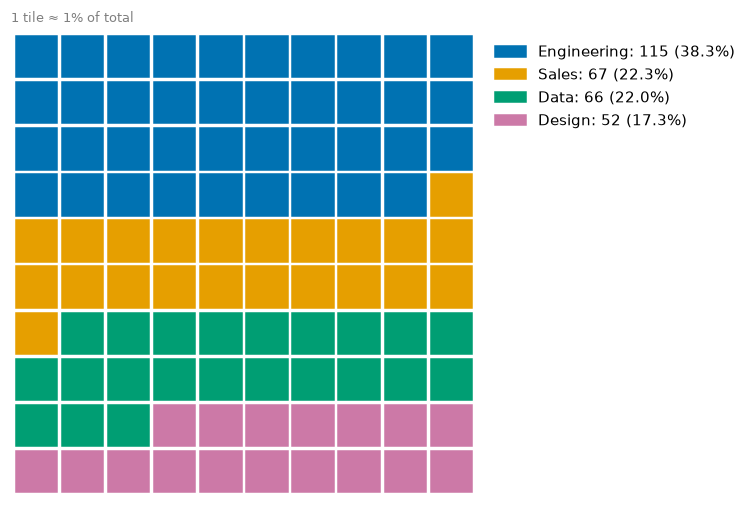
percent_grid¶
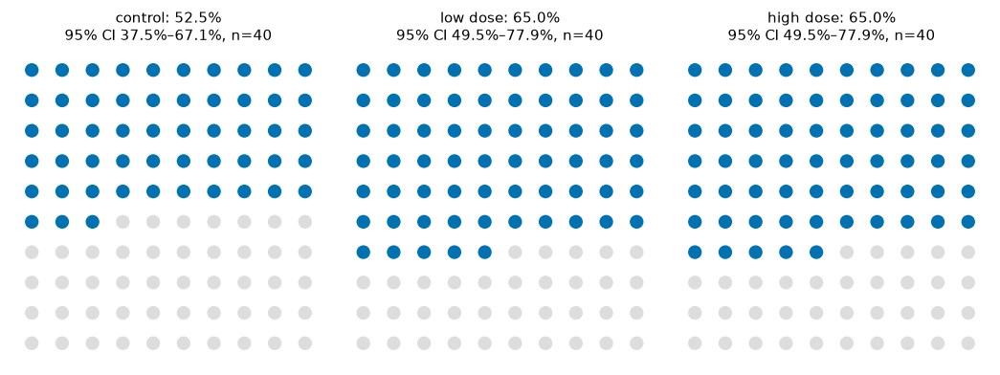
stacked_percentages¶
res = vc.stacked_percentages(survey, group="team", category="Meetings are useful",
category_order=levels, colors="RdBu", horizontal=True)
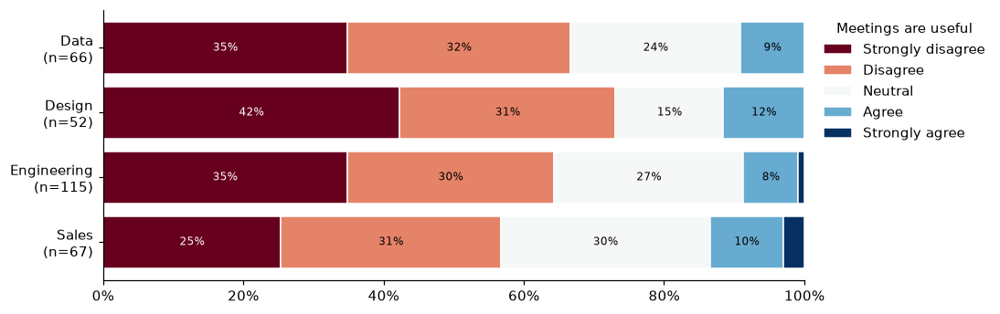
donut_grid¶
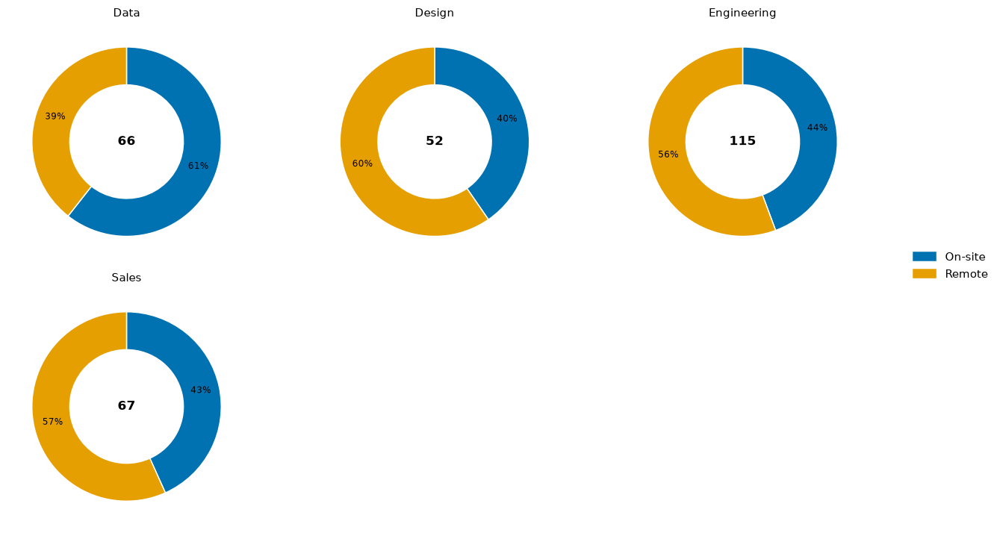
nested_pie¶
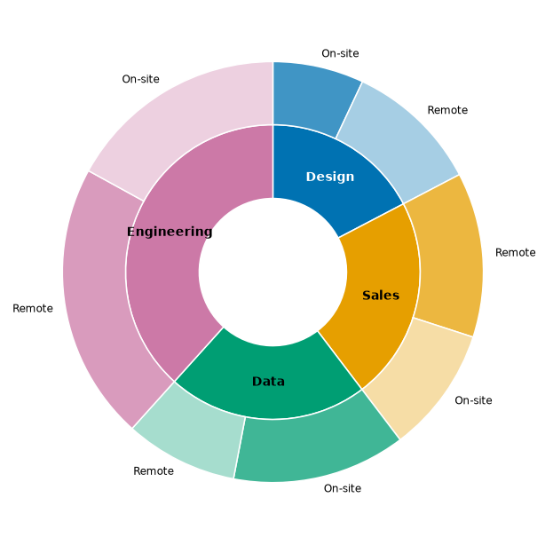
circular_bar¶
res = vc.circular_bar(monthly.assign(year=monthly["month"].str[:4]), label="month",
value="online", group="year", sort=False)
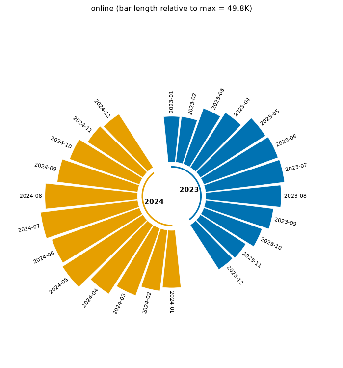
waterfall¶
res = vc.waterfall(pd.DataFrame({"item": ["Opening", "Sales", "Refunds", "Costs", "Tax"],
"amount": [1000, 650, -120, -380, -45]}),
label="item", value="amount", start_label="Opening", total_label="Closing")
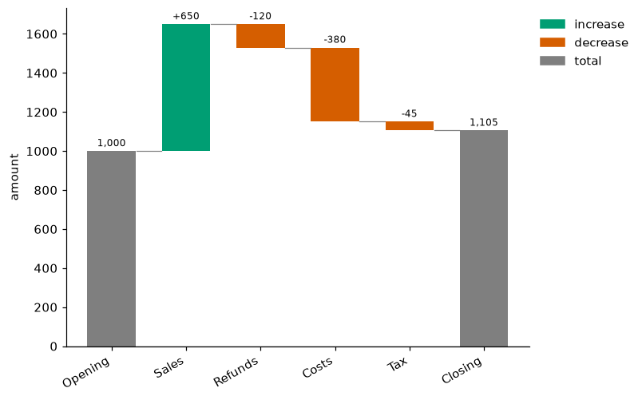
funnel¶
res = vc.funnel(pd.DataFrame({"stage": ["Visited", "Signed up", "Activated", "Paid"],
"users": [10000, 3200, 1900, 410]}), stage="stage", value="users")
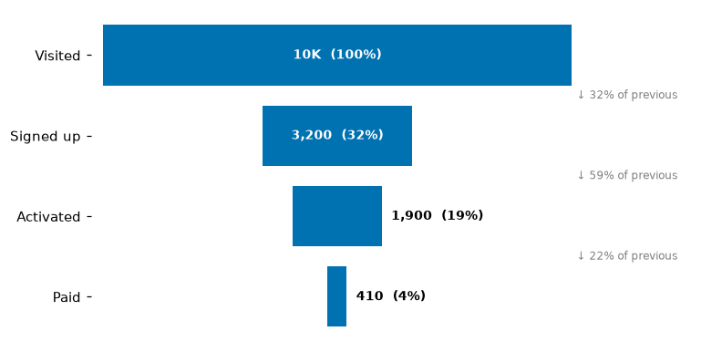
bullet¶
res = vc.bullet(pd.DataFrame({"kpi": ["Revenue", "Profit", "Satisfaction"],
"value": [270, 22, 4.1], "target": [250, 26, 4.5],
"poor": [150, 10, 2.5], "ok": [225, 20, 3.5], "good": [300, 30, 5]}),
label="kpi", value="value", target="target", bands=["poor", "ok", "good"])
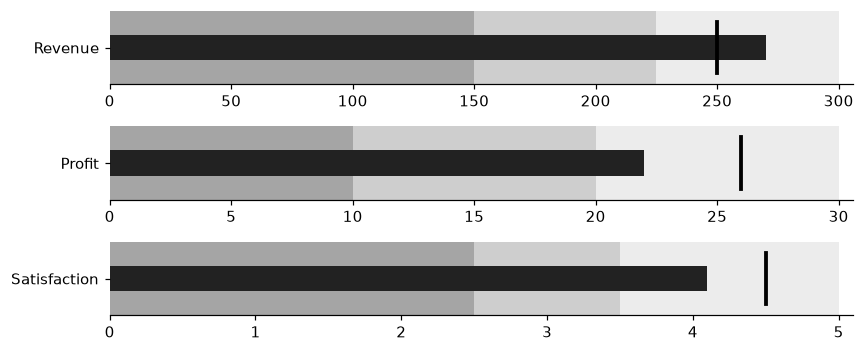
upset¶
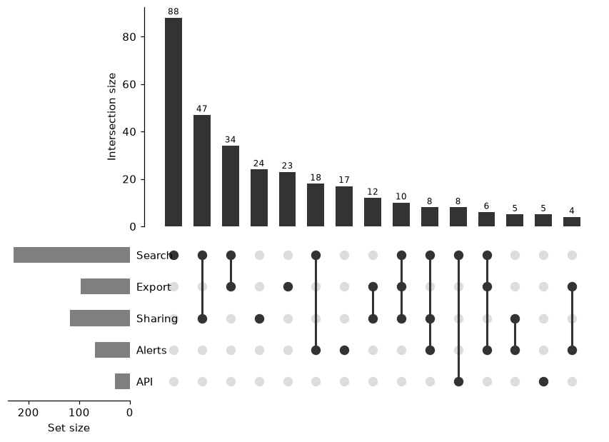
Time and projects¶
period_bars¶

timeseries_fill¶
res = vc.timeseries_fill(sales.set_index("date")[["online", "store"]].resample("W").mean()
.reset_index(), time="date", series=["online", "store"])

calendar_heatmap¶

gantt¶

duration_plot¶
res = vc.duration_plot(proj, label="task", start="start", end="end",
inner_start="work_start", inner_end="work_end")

Multivariate and networks¶
pca_plot¶
res = vc.pca_plot(meas, features=["length", "width", "depth", "mass"], group="group", loadings=True)

radar¶

network_map¶
res = vc.network_map(edges, source="source", target="target", weight="strength", size_by="betweenness")

Exploring a dataset¶
profile_boxes¶
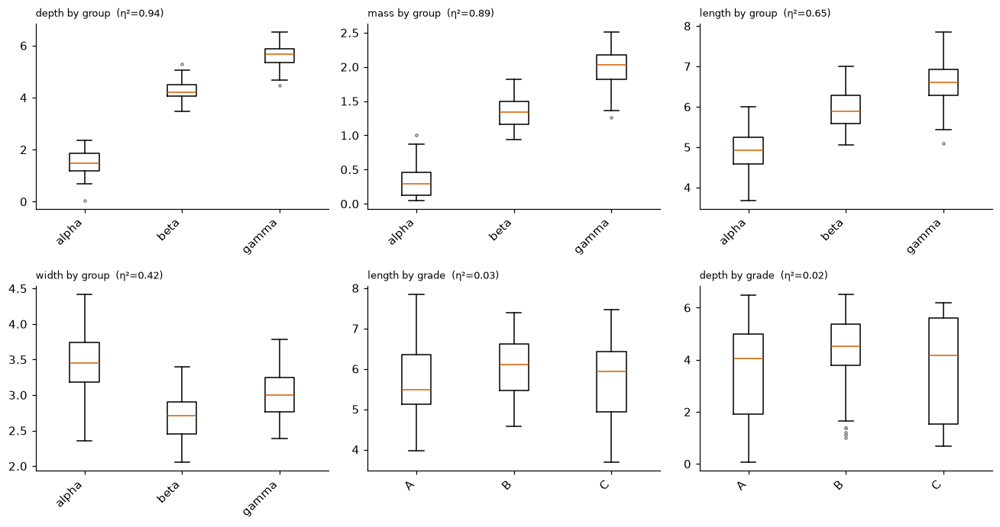